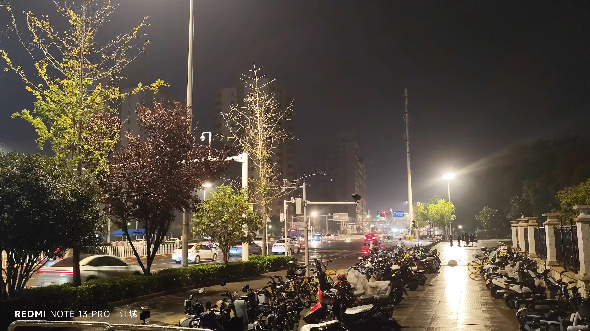

Journal · 2024-10-16
湖北省武汉市
编辑于2024年10月16日 13:07
从江州到江城，
不见送客的白居易，
只有风雨中的夜归人，
早夜奔驰，有些狼狈……ʘᴗʘ
编辑于2024年10月16日 13:07
柴江赣北 : 华小科，我淋着雨回来了！
2024年10月13日 23:27

Edited on Oct 16, 2024 13:07
From Jiangzhou to the River City,
No Bai Juyi seeing his guest off,
Only the one returning home at night through wind and rain,
Racing day and night, a bit bedraggled…ʘᴗʘ
Edited on Oct 16, 2024 13:07
柴江赣北 : Hua Xiaoke, I came back drenched in the rain!
Oct 13, 2024 23:27
Modifié le 16 oct. 2024 à 13:07
De Jiangzhou à la ville du fleuve,
Point de Bai Juyi reconduisant son hôte,
Seul le voyageur qui rentre la nuit, sous le vent et la pluie,
À courir jour et nuit, un peu dépenaillé…ʘᴗʘ
Modifié le 16 oct. 2024 à 13:07
柴江赣北 : Hua Xiaoke, je suis rentré trempé par la pluie !
13 oct. 2024 23:27
Bearbeitet am 16.10.2024 um 13:07
Von Jiangzhou zur Flussstadt,
Kein Bai Juyi, der den Gast verabschiedet,
Nur der Heimkehrer in der Nacht, durch Wind und Regen,
Tag und Nacht unterwegs, etwas mitgenommen…ʘᴗʘ
Bearbeitet am 16.10.2024 um 13:07
柴江赣北 : Hua Xiaoke, ich bin völlig durchnässt zurückgekommen!
13.10.2024 23:27